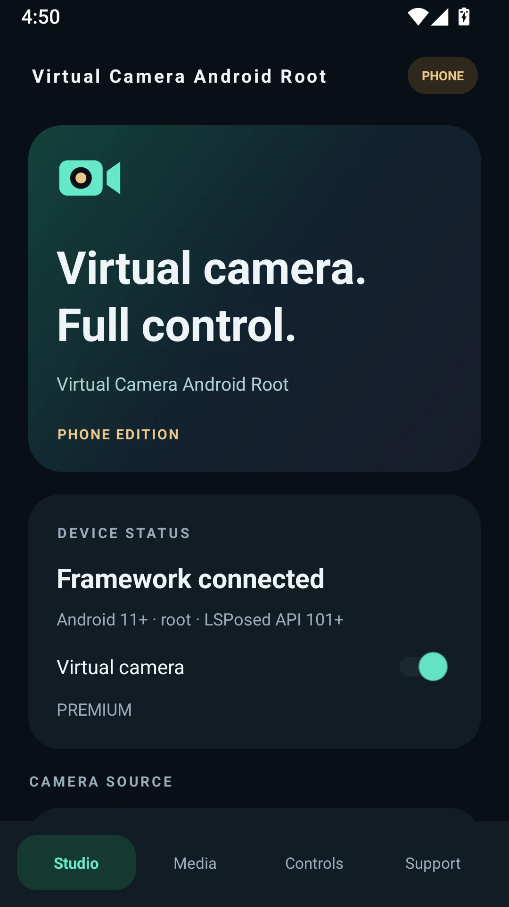
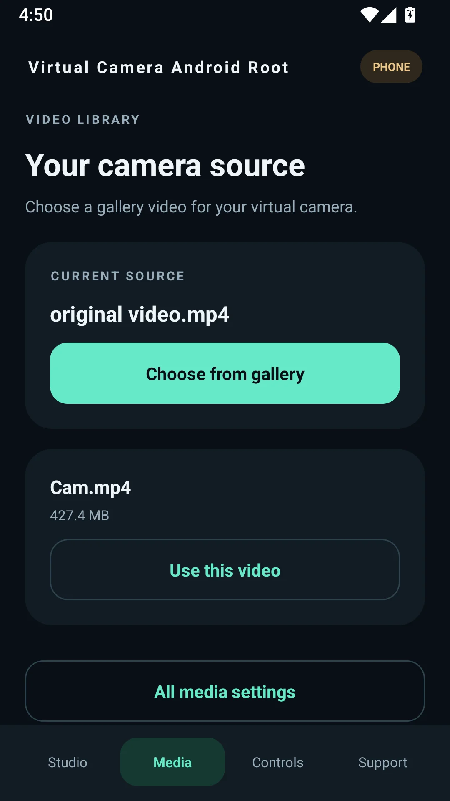
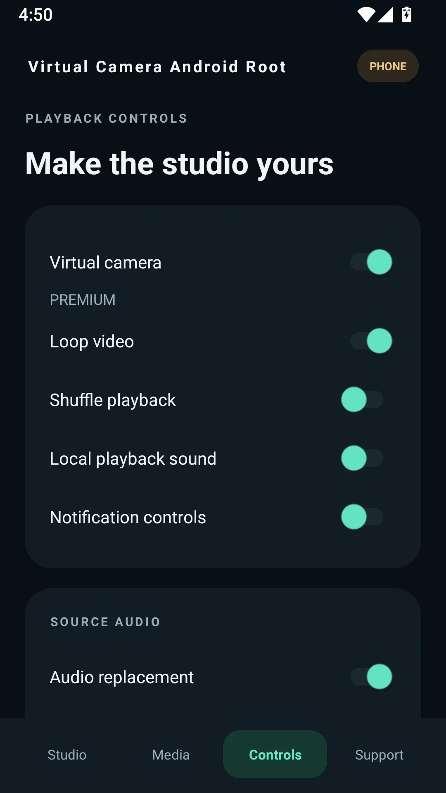
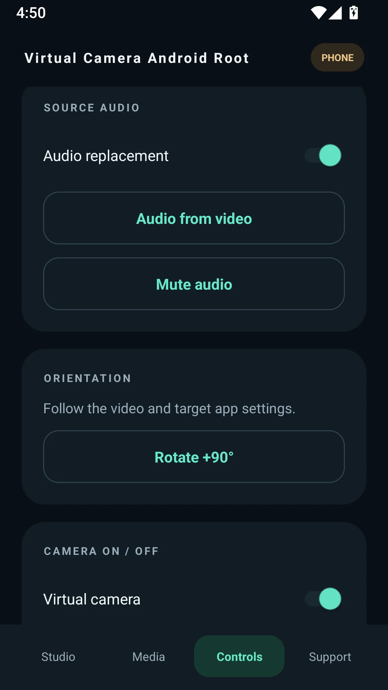
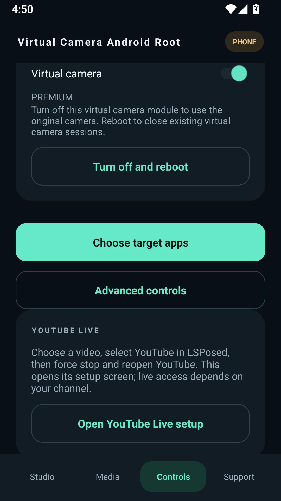
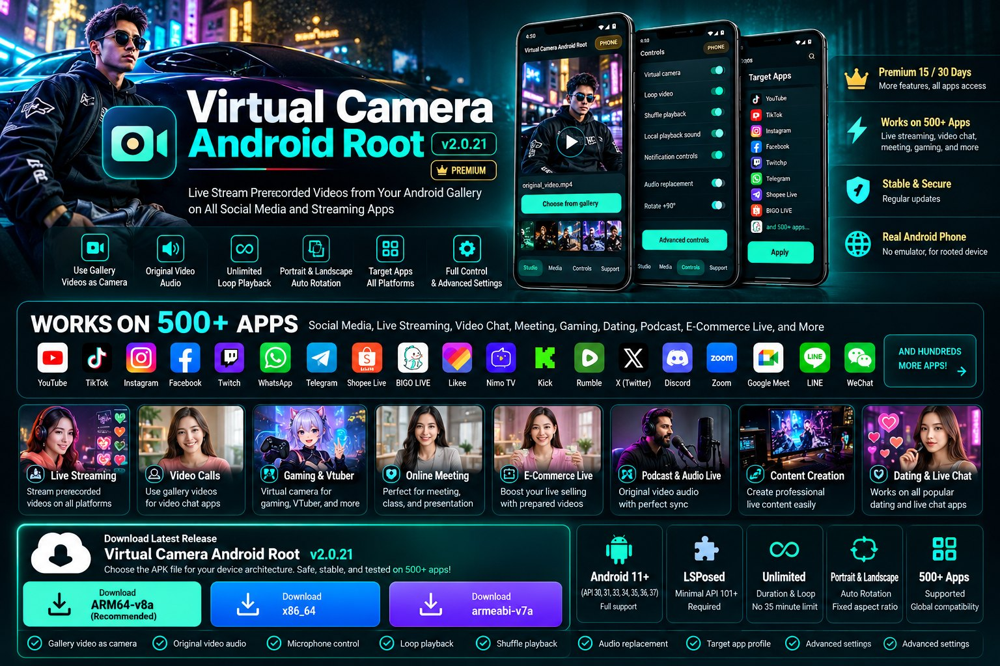

Turn Your Gallery Videos Into a Virtual Camera
The Android virtual camera app for live streaming prerecorded videos from your gallery. Keep the source audio, control your microphone, loop content and choose which Android apps use your camera feed.
Live Stream a Prerecorded Video From Your Android Gallery
Looking for a way to use an MP4 video instead of your Android camera? Virtual Camera Android Root transforms your selected gallery video into a virtual camera source for supported camera-based streaming and video applications. Your content, your soundtrack, your camera workflow.
📹 Live streaming and creators
Explore camera workflows for TikTok LIVE, Instagram Live, YouTube Live, Facebook Live, Twitch, Kick, VK Live, BIGO LIVE, Shopee Live, Nimo TV, Rumble, Likee, Tango Live, Twitcast and more.
💬 Video chats and meetings
Use cases span WhatsApp, Telegram, Discord, Zoom, Google Meet, Webex, Microsoft Teams, video chat platforms, live shopping and creator demonstrations.
Powerful Android Virtual Camera Features
Everything you need to manage gallery video playback and camera-source routing on a rooted Android phone.
Video From Gallery
Select prerecorded MP4 and compatible videos as your virtual camera source.
Original Video Audio
Use your video's own soundtrack with source audio replacement controls.
Loop & Shuffle
Repeat videos for ongoing streaming and customize your playback.
Microphone Control
Control unwanted microphone capture and prioritize your video audio.
Portrait / Landscape
Configure orientation and aspect-ratio handling for vertical or horizontal streams.
Target App Selector
Choose compatible Android applications for your virtual camera profile.
Advanced Root Controls
Manage the virtual camera, audio replacement, and LSPosed-based settings.
Premium Tools
Additional features with 15-day and 30-day Premium subscription options.
Take a Look Inside the Real Android App
Actual PHONE edition screenshots showing the Studio dashboard, gallery video library, playback, audio and advanced controls.





500+ Apps Tested by the Developer
Virtual Camera Android Root has been tested by its developer across more than 500 Android apps spanning live streaming, social media, communication, video meetings and other creator workflows. The app focuses on Android camera-source integration, not a single streaming platform.
🌐 Social media & livestreaming
TikTok, YouTube, Instagram, Facebook, Twitch, Kick, VK Live, Shopee Live, BIGO LIVE, REDnote, X Live, Rumble, Nimo TV, Poppo Live, MICO, Tango Live, Likee, YouNow and more.
📞 Collaboration & content
WhatsApp, Telegram, LINE, WeChat, Discord, Zoom, Google Meet, Microsoft Teams, Webex, social video apps, community apps and creator ecosystems.
Developer testing covers different app workflows; availability of particular features can vary by platform version, Android device, required live-stream eligibility and third-party policies. Platform names do not imply sponsorship.
Download Virtual Camera Android Root
Select your phone's architecture. APK files are hosted exclusively as public assets on the official GitHub Releases page.
The three download buttons discover the newest published release and use its actual APK filenames. When GitHub's public API is unavailable, the buttons safely open the releases page instead. No APK files are hosted on this website.
Browse All Releases ↗System Requirements
| Android | Android 11 and newer |
|---|---|
| Android API Levels | 30, 31, 33, 34, 35, 36, 37 |
| Root | Required |
| LSPosed | Minimum LSPosed API 101 |
| Device Type | Rooted physical Android phone (PHONE edition) |
| ABIs | arm64-v8a, armeabi-v7a, x86_64 |
How to Live Stream Gallery Video on Android
Set up your rooted smartphone in six straightforward steps.
Download APK
Choose the ARM64, ARM32 or x86_64 APK matching your device.
Enable LSPosed
Configure Root and the module using LSPosed API 101+.
Choose video
Select your source MP4 file or other supported gallery video.
Configure controls
Adjust original video audio, looping, rotation and playback settings.
Select target apps
Assign the camera module to chosen Android applications.
Start streaming
Open the target camera workflow and test before going live.
Frequently Asked Questions
How can I live stream a prerecorded video from my Android gallery?
Install Virtual Camera Android Root on a rooted Android smartphone, choose a video source from your gallery, configure LSPosed and select your target app. The app provides the gallery video as virtual camera input in compatible workflows.
Can I use a video with its original soundtrack?
Yes. Source-audio routing, microphone control and audio replacement are features of Virtual Camera Android Root.
Does it support TikTok LIVE, YouTube Live and Instagram Live?
These services are included among the developer's tested target-app ecosystem. Exact behavior can vary by app build and broadcaster permissions.
What Android and LSPosed versions do I need?
Android 11+, Android API levels 30, 31, 33, 34, 35, 36 and 37, with Root and LSPosed API 101 or newer.
Where is the safest official APK download?
Use the GitHub Releases downloads linked on this website. Choose the APK whose architecture matches your Android device.
Bring Your Video Gallery to Life
Take control of your prerecorded media, customize your Android camera feed and create more with one powerful rooted-phone virtual camera tool.
